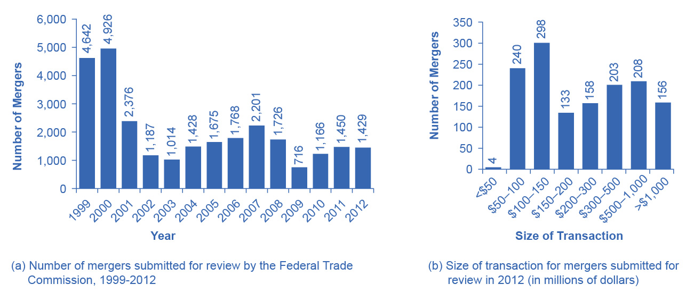

11.1 Corporate Mergers
Learning Objectives
By the end of this section, you will be able to:
- Explain antitrust law and its significance
- Calculate concentration ratios
- Calculate the Herfindahl-Hirschman Index (HHI)
- Evaluate methods of antitrust regulation
A corporate merger occurs when two formerly separate firms combine to become a single firm. When one firm purchases another, it is called an acquisition. An acquisition may not look just like a merger, since the newly purchased firm may continue to operate under its former company name. Mergers can also be lateral, where two firms of similar sizes combine to become one. However, both mergers and acquisitions lead to two formerly separate firms operating under common ownership, and so they are commonly grouped together.
Regulations for Approving Mergers
Since a merger combines two firms into one, it can reduce the extent of competition between firms. Therefore, when two U.S. firms announce a merger or acquisition where at least one of the firms is above a minimum size of sales (a threshold that moves up gradually over time, and was at $101 million in 2022), or certain other conditions are met, they are required under law to notify the U.S. Federal Trade Commission (FTC). The left-hand panel of Figure 11.2 (a) shows the number of mergers submitted for review to the FTC each year from 1999 to 2012. Mergers follow the business cycle, falling after the 2001 recession, peaking in 2007 as the Great Recession struck, and then rising since 2009. The right-hand panel of Figure 11.2 (b) shows the distribution of those mergers submitted for review in 2015 as measured by the size of the transaction. It is important to remember that this total leaves out many small mergers under $50 million, which companies only need to report in certain limited circumstances. In 2012, 26 percent of all reported merger and acquisition transactions exceeded $500 million, while 11 percent exceeded $1 billion.

Figure 11.2 Number and Size of Mergers (a) The number of mergers grew from 2003 to 2007, then fell dramatically during the 2008-2009 Great Recession, before recovering since. (b) In 2012, the greatest number of mergers submitted for review by the Federal Trade Commission was for transactions between $100–$150 million.
The laws that give government the power to block certain mergers, and even in some cases to break up large firms into smaller ones, are called antitrust laws. Before a large merger happens, the antitrust regulators at the FTC and the U.S. Department of Justice can allow the merger, prohibit it, or allow it if certain conditions are met. One common condition is that the merger will be allowed if the firm agrees to sell off certain parts. For example, in 2006, Johnson & Johnson bought the Pfizer’s “consumer health” division, which included well-known brands like Listerine mouthwash and Sudafed cold medicine. As a condition of allowing the merger, Johnson & Johnson was required to sell off six brands to other firms, including Zantac® heartburn relief medication, Cortizone anti-itch cream, and Balmex diaper rash medication, to preserve a greater degree of competition in these markets.
The U.S. government approves most proposed mergers. In a market-oriented economy, firms have the freedom to make their own choices. Private firms generally have the freedom to:
- expand or reduce production
- set the price they choose
- open new factories or sales facilities or close them
- hire workers or to lay them off
- start selling new products or stop selling existing ones
If the owners want to acquire a firm or be acquired, or to merge with another firm, this decision is just one of many that firms are free to make. In these conditions, the managers of private firms will sometimes make mistakes. They may close down a factory which, it later turns out, would have been profitable. They may start selling a product that ends up losing money. A merger between two companies can sometimes lead to a clash of corporate personalities that makes both firms worse off. However, the fundamental belief behind a market-oriented economy is that firms, not governments, are in the best position to know if their actions will lead to attracting more customers or producing more efficiently.
Government regulators agree that most mergers are beneficial to consumers. As the Federal Trade Commission has noted on its website (as of November, 2013): “Most mergers actually benefit competition and consumers by allowing firms to operate more efficiently.” At the same time, the FTC recognizes, “Some [mergers] are likely to lessen competition. That, in turn, can lead to higher prices, reduced availability of goods or services, lower quality of products, and less innovation. Some mergers create a concentrated market, while others enable a single firm to raise prices.” The challenge for the antitrust regulators at the FTC and the U.S. Department of Justice is to figure out when a merger may hinder competition. This decision involves both numerical tools and some judgments that are difficult to quantify. The following Clear It Up explains the origins of U.S. antitrust law.
Clear It Up
What is U.S. antitrust law?
In the closing decades of the 1800s, many industries in the U.S. economy were dominated by a single firm that had most of the sales for the entire country. Supporters of these large firms argued that they could take advantage of economies of scale and careful planning to provide consumers with products at low prices. However, critics pointed out that when competition was reduced, these firms were free to charge more and make permanently higher profits, and that without the goading of competition, it was not clear that they were as efficient or innovative as they could be.
In many cases, these large firms were organized in the legal form of a “trust,” in which a group of formerly independent firms were consolidated by mergers and purchases, and a group of “trustees” then ran the companies as if they were a single firm. Thus, when the U.S. government sought to limit the power of these trusts, it passed the Sherman Antitrust Act in 1890 - the nation's first antitrust law. In an early demonstration of the law’s power, the U.S. Supreme Court in 1911 upheld the government’s right to break up Standard Oil, which had controlled about 90% of the country’s oil refining, into 34 independent firms, including Exxon, Mobil, Amoco, and Chevron. In 1914, the Clayton Antitrust Act outlawed mergers and acquisitions (where the outcome would be to “substantially lessen competition” in an industry), price discrimination (where different customers are charged different prices for the same product), and tied sales (where purchase of one product commits the buyer to purchase some other product). Also in 1914, the Federal Trade Commission (FTC) was created to define more specifically what competition was unfair. In 1950, the Celler-Kefauver Act extended the Clayton Act by restricting vertical and conglomerate mergers. A vertical merger occurs when two or more firms, operating at different levels within an industry's supply chain, merge operations. A conglomerate merger is a merger between firms that are involved in totally unrelated business activities. In the twenty-first century, the FTC and the U.S. Department of Justice continue to enforce antitrust laws.
The Four-Firm Concentration Ratio
Regulators have struggled for decades to measure the degree of monopoly power in an industry. An early tool was the concentration ratio, which measures the combined market share (or percent of total industry sales) which is accounted for by the largest firms (typically the top four to eight). For an explanation of how high market concentrations can create inefficiencies in an economy, refer to Monopoly.
Say that the market for replacing broken automobile windshields in a certain city has 18 firms with the market shares in Table 11.1, where the market share is each firm’s proportion of total sales in that market. We calculate the four-firm concentration ratio by adding the market shares of the four largest firms: in this case, 16 + 10 + 8 + 6 = 40. We do not consider this concentration ratio especially high, because the largest four firms have less than half the market.
Table 11.1 Calculating Concentration Ratios from Market Shares
The concentration ratio approach can help to clarify some of the fuzziness over deciding when a merger might affect competition. For instance, if two of the smallest firms in the hypothetical market for repairing automobile windshields merged, the four-firm concentration ratio would not change—which implies that there is not much worry that the degree of competition in the market has notably diminished. However, if the top two firms merged, then the four-firm concentration ratio would become 46 (that is, 26 + 8 + 6 + 6). While this concentration ratio is modestly higher, the four-firm concentration ratio would still be less than half, so such a proposed merger might barely raise an eyebrow among antitrust regulators.
Link It Up
Visit this website to read an article about Google’s run-in with the FTC.
The Herfindahl-Hirschman Index
A four-firm concentration ratio is a simple tool, which may reveal only part of the story. For example, consider two industries that both have a four-firm concentration ratio of 80. However, in one industry five firms each control 20% of the market, while in the other industry, the top firm holds 77% of the market and all the other firms have 1% each. Although the four-firm concentration ratios are identical, it would be reasonable to worry more about the extent of competition in the second case—where the largest firm is nearly a monopoly—than in the first.
Another approach to measuring industry concentration that can distinguish between these two cases is called the Herfindahl-Hirschman Index (HHI). We calculate HHI by summing the squares of the market share of each firm in the industry, as the following Work It Out shows.
Work It Out
Calculating HHI
Step 1. Calculate the HHI for a monopoly with a market share of 100%. Because there is only one firm, it has 100% market share. The HHI is 1002 = 10,000.
Step 2. For an extremely competitive industry, with dozens or hundreds of extremely small competitors, the HHI value might drop as low as 100 or even less. Calculate the HHI for an industry with 100 firms that each have 1% of the market. In this case, the HHI is 100(12) = 100.
Step 3. Calculate the HHI for the industry in Table 11.1. In this case, the HHI is 162 + 102 + 82 + 7(62) + 8(32) = 744.
Step 4. Note that the HHI gives greater weight to large firms.
Step 5. Consider the earlier example, comparing one industry where five firms each have 20% of the market with an industry where one firm has 77% and the other 23 firms have 1% each. The two industries have the same four-firm concentration ratio of 80. However, the HHI for the first industry is 5(202) = 2,000, while the HHI for the second industry is much higher at 772 + 23(12) = 5,952.
Step 6. Note that the near-monopolist in the second industry drives up the HHI measure of industrial concentration.
Step 7. Review Table 11.2 which gives some examples of the four-firm concentration ratio and the HHI in various U.S. industries in 2016. (You can find market share data from multiple industry sources. Data in the table are from: Statista.com (for wireless), The Wall Street Journal (for automobiles), Gartner.com (for computers) and the U.S. Bureau of Transportation Statistics (for airlines).)
Table 11.2 Examples of Concentration Ratios and HHIs in the U.S. Economy, 2016
In the 1980s, the FTC followed these guidelines: If a merger would result in an HHI of less than 1,000, the FTC would probably approve it. If a merger would result in an HHI of more than 1,800, the FTC would probably challenge it. If a merger would result in an HHI between 1,000 and 1,800, then the FTC would scrutinize the plan and make a case-by-case decision. However, in the last several decades, the antitrust enforcement authorities have moved away from relying as heavily on measures of concentration ratios and HHIs to determine whether they will allow a merger, and instead they carry out more case-by-case analysis on the extent of competition in different industries.
New Directions for Antitrust
Both the four-firm concentration ratio and the Herfindahl-Hirschman index share some weaknesses. First, they begin from the assumption that the “market” under discussion is well-defined, and the only question is measuring how sales are divided in that market. Second, they are based on an implicit assumption that competitive conditions across industries are similar enough that a broad measure of concentration in the market is enough to make a decision about the effects of a merger. These assumptions, however, are not always correct. In response to these two problems, the antitrust regulators have been changing their approach in the last decade or two.
Defining a market is often controversial. For example, Microsoft in the early 2000s had a dominant share of the software for computer operating systems. However, in the total market for all computer software and services, including everything from games to scientific programs, the Microsoft share was only about 14% in 2014. A narrowly defined market will tend to make concentration appear higher, while a broadly defined market will tend to make it appear smaller.
In recent decades, there have been two especially important shifts affecting how we define markets: one centers on technology and the other centers on globalization. In addition, these two shifts are interconnected. With the vast improvement in communications technologies, including the development of the internet, a consumer can order books or pet supplies from all over the country or the world. As a result, the degree of competition many local retail businesses face has increased. The same effect may operate even more strongly in markets for business supplies, where so-called “business-to-business” websites can allow buyers and suppliers from anywhere in the world to find each other.
Globalization has changed the market boundaries. As recently as the 1970s, it was common for measurements of concentration ratios and HHIs to stop at national borders. Now, many industries find that their competition comes from the global market. A few decades ago, three companies, General Motors, Ford, and Chrysler, dominated the U.S. auto market. By 2014, however, production of these three firms accounted for less than half of U.S. auto sales, although by 2021, with the emergence of COVID-19, the three firms accounted for essentially half of U.S. auto sales. The three firms face competition from well-known car manufacturers such as Toyota, Honda, Nissan, Volkswagen, Mitsubishi, and Mazda. When analysts calculate HHIs with a global perspective, concentration in most major industries—including cars—is lower than in a purely domestic context.
Because attempting to define a particular market can be difficult and controversial, the Federal Trade Commission has begun to look less at market share and more at the data on actual competition between businesses. For example, in February 2007, Whole Foods Market and Wild Oats Market announced that they wished to merge. These were the two largest companies in the market that the government defined as “premium natural and organic supermarket chains.” However, one could also argue that they were two relatively small companies in the broader market for all stores that sell groceries or specialty food products.
Rather than relying on a market definition, the government antitrust regulators looked at detailed evidence on profits and prices for specific stores in different cities, both before and after other competitive stores entered or exited. Based on that evidence, the Federal Trade Commission decided to block the merger. After two years of legal battles, the FTC eventually allowed the merger in 2009 under the conditions that Whole Foods sell off the Wild Oats brand name and a number of individual stores, to preserve competition in certain local markets. For more on the difficulties of defining markets, refer to Monopoly.
This new approach to antitrust regulation involves detailed analysis of specific markets and companies, instead of defining a market and counting up total sales. A common starting point is for antitrust regulators to use statistical tools and real-world evidence to estimate the demand curves and supply curves the firms proposing a merger face. A second step is to specify how competition occurs in this specific industry. Some possibilities include competing to cut prices, to raise output, to build a brand name through advertising, and to build a reputation for good service or high quality. With these pieces of the puzzle in place, it is then possible to build a statistical model that estimates the likely outcome for consumers if the two firms are allowed to merge. These models do require some degree of subjective judgment, and so they can become the subject of legal disputes between the antitrust authorities and the companies that wish to merge.